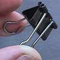
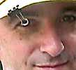
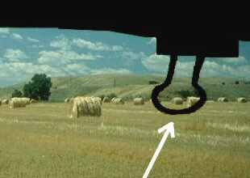

| Fig. #1  |
You might find this of interest, a simple model tracking device for about 25 cents. Fig. 1 shows a small, clamp-type paper clip available (cheap!) at any office supply store. Fig. 2 shows it attached to the brim of my hat, with one wire loop left in the down position to act as a sight. |
Fig. #2  |
| When a model comes down at a distance, it is sometimes difficult to walk a straight line to the model. We all tend to take our eyes off its location and wander around in search of the downed ship. Pick any convenient landmark in the vicinity of the downed model (a prominent tree or post for example) and center it in the loop of your sight. Keep the landmark centered in your sight as you walk toward the landmark, and you will walk a perfectly straight line (Fig. 3). If the landmark is directly behind the spot where you saw the model come down, you'll walk right to it. I've tested this system many times over the summer, and it works like a charm. The dangling loop of the clip snaps flush with the brim of your hat when not in use. | Fig. #3  |
Copyright 1998, Thayer Syme. All rights reserved